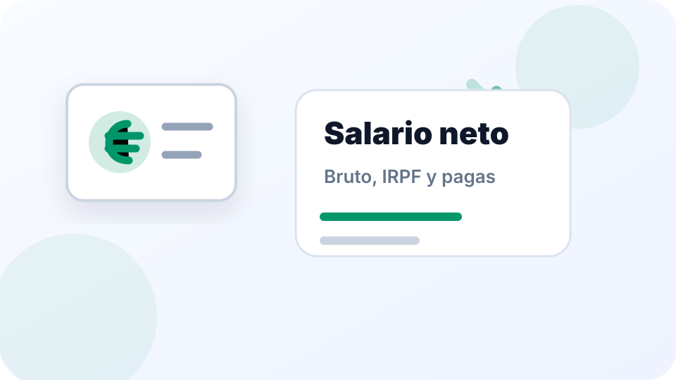

Lo importante
- La mayoría de convenios establecen al menos dos pagas extra al año, aunque pueden ser más.
- Las pagas extra pueden cobrarse en fechas concretas o estar prorrateadas en la nómina mensual.
- Si no están prorrateadas, al terminar el contrato puede corresponder la parte proporcional generada.
- El importe depende del salario base y de lo que diga el convenio colectivo aplicable.
- Entender si tus pagas están prorrateadas o no es clave para revisar correctamente un finiquito.
Qué son las pagas extra
Las pagas extra son retribuciones adicionales al salario mensual ordinario, reconocidas por ley y reguladas por el Estatuto de los Trabajadores y los convenios colectivos.
El Estatuto establece un mínimo de dos pagas extra al año, aunque el convenio puede mejorar esa condición y fijar más pagas, importes distintos o fechas de pago diferentes.
Pagas en fechas fijas o prorrateadas
Revisa tu nómina o tu contrato. Si el salario mensual incluye la expresión 'incluye prorrata de pagas extra', están distribuidas en los 12 meses.
Cuántas pagas extra corresponden
El mínimo legal son dos pagas extra al año. Sin embargo, el convenio colectivo de tu sector puede establecer más pagas o condiciones mejores.
- Dos pagas: lo más habitual como mínimo legal.
- Tres o cuatro pagas: en algunos convenios, especialmente en sectores como banca o administración pública.
- Paga de beneficios: algunos convenios incluyen una paga adicional vinculada a resultados de la empresa.
Consulta el convenio colectivo de tu sector o empresa para saber exactamente cuántas pagas te corresponden y en qué condiciones.
Cómo se calcula una paga extra
El importe de una paga extra suele tomar como referencia el salario base mensual, aunque algunos convenios incluyen también complementos fijos o excluyen determinados conceptos.
Para una paga completa, el importe suele equivaler a un mes de salario base. Para una paga proporcional, se calcula el tiempo trabajado dentro del periodo de devengo.
Salario base mensual: 1.500 €. Paga completa: 1.500 €. Si solo se han trabajado 4 de los 6 meses del periodo: paga proporcional = 1.500 × (4/6) = 1.000 €.
Qué es el periodo de devengo
Cada paga extra se genera durante un periodo de tiempo concreto llamado periodo de devengo. Habitualmente:
- Paga de junio: se devenga entre enero y junio.
- Paga de diciembre: se devenga entre julio y diciembre.
Si el trabajador no ha estado durante todo el periodo, solo corresponde la parte proporcional al tiempo realmente trabajado dentro de ese intervalo.
Pagas extra en el finiquito
Si al terminar el contrato existen pagas extra no prorrateadas y pendientes de cobro, deben incluirse en el finiquito.
La cantidad a percibir es la parte proporcional generada desde el inicio del último periodo de devengo hasta la fecha de baja.
Si las pagas están prorrateadas, ya se han cobrado mes a mes y no corresponde ningún importe adicional en el finiquito por este concepto.
Antes de firmar el finiquito, comprueba si tus pagas extra estaban prorrateadas o no. Si no lo estaban, verifica que aparecen correctamente calculadas en la liquidación.
Errores frecuentes con las pagas extra
- Asumir que las pagas están prorrateadas sin comprobarlo en la nómina.
- No incluir en el finiquito la parte proporcional de pagas no prorrateadas.
- Calcular el importe solo sobre el salario base cuando el convenio incluye complementos.
- Confundir el periodo de devengo con el año natural.
- No revisar el convenio para saber el número exacto de pagas que corresponden.
Preguntas frecuentes
¿Las pagas extra siempre son dos?
Como mínimo legal sí, pero el convenio colectivo puede establecer más pagas o condiciones distintas.
¿Cobrar pagas prorrateadas es peor?
No necesariamente. El importe anual es el mismo. La diferencia es cuándo se cobra: en dos momentos concretos o repartido cada mes.
¿Qué pasa si me voy antes de cobrar la paga de diciembre?
Si la paga no estaba prorrateada, debes cobrar la parte proporcional generada desde julio hasta tu fecha de baja.
¿Las pagas extra llevan IRPF?
Sí. Al igual que el resto de la retribución, están sujetas a retención de IRPF, lo que puede reducir el neto percibido.
¿El salario anual incluye las pagas extra?
Depende de cómo se haya pactado. En muchos casos el salario bruto anual ya incluye las pagas extra. Conviene revisar el contrato.
¿La calculadora de Numora sustituye al convenio?
No. La calculadora ofrece una estimación. El importe exacto depende de lo que establezca el convenio y el contrato.